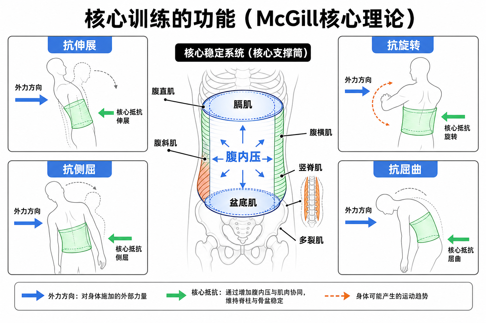

Day 12 · 主要肌群-核心肌群与McGill核心功能分类
一句话总结
核心像身体中段的“支撑筒”: 腹直肌、腹斜肌、腹横肌、竖脊肌、多裂肌、膈肌和盆底肌共同维持腹内压与脊柱位置。McGill 核心训练的重点不是反复把腰弯来弯去，而是抗伸展、抗旋转、抗侧屈、抗屈曲。

核心要点
-
核心肌群: 不等于六块腹肌，而是躯干、骨盆和呼吸压力系统。
先抓结论: 核心负责把胸廓、腰椎、骨盆连接成可控整体，让四肢发力时身体中段不漏力。常见误解
表层动力肌
腹直肌、腹外斜肌、腹内斜肌和竖脊肌能制造明显躯干动作，如屈曲、旋转、侧屈和伸展。
深层稳定肌
腹横肌、多裂肌、膈肌和盆底肌更像内部束带，负责细微控制、腹压和椎间稳定。
训练判断
核心强不只是卷腹次数多，而是深蹲、硬拉、推拉和跑跳时肋骨、骨盆、腰椎能否保持稳定。
❌以为腹肌明显就核心强。✅其实可见腹肌主要反映体脂和腹直肌厚度；核心能力还包括抗外力、呼吸和骨盆控制。
-
腹直肌: 主要做脊柱屈曲，也参与抗伸展。
起止点定位
腹直肌从耻骨联合和耻骨嵴向上止于胸骨剑突与第5-7肋软骨。它像腹部正中两条纵向安全带，能把胸廓和骨盆拉近。
功能主动收缩时做脊柱屈曲，比如卷腹上半段；等长收缩时抵抗腰椎过度伸展，比如平板支撑、防止俯卧撑塌腰。
训练体会平板支撑时轻轻“肋骨向骨盆收”，腰不塌、臀不过度撅起，腹直肌会像前侧刹车一样限制腰椎后弯。
搭档与拮抗它常和腹斜肌、腹横肌一起维持腹压；与竖脊肌在屈伸方向上互相制衡，二者都需要但不能互相抢控制。
-
腹斜肌: 控制旋转与侧屈，是抗旋转训练主角之一。
先抓结论: 腹斜肌像身体两侧的交叉斜拉索，能让躯干转，也能让躯干“不被转走”。
真实例子结构 位置与纤维方向 训练意义 腹外斜肌 肋骨外侧向对侧骨盆斜行 帮助躯干旋转、侧屈，常参与转体和抗旋转。 腹内斜肌 骨盆向同侧肋骨斜行 与外斜肌交叉配合，控制骨盆和胸廓相对位置。 Pallof press 中，弹力带把身体拉向一侧，腹斜肌不让躯干跟着旋转。这就是抗旋转，不是主动扭腰。
常见误解❌以为练腹斜肌必须疯狂转体。✅其实很多核心训练更看重“不转”，尤其对需要传力和保护腰椎的训练者。
-
腹横肌: 深层环形束带，帮助维持腹内压。
字面意思
腹横肌的纤维大多横向环绕腹部，像一圈宽腰带。它不是负责做大幅度卷腹，而是收紧腹壁、配合呼吸和腹压。
大白话类比腹腔像充气罐，腹横肌像罐壁束带。束带太松，罐子受力会变形；束带合适，压力能把脊柱和骨盆撑稳。
为什么影响训练/考试NASM 常把腹横肌放进局部稳定系统。深蹲和硬拉时会先“撑开腰腹”，不是把肚子吸瘪；目标是让腹壁向四周产生可控张力。
-
竖脊肌与多裂肌: 一个负责脊柱伸展大方向，一个负责椎间微稳定。
训练含义
竖脊肌
沿脊柱两侧纵向分布，负责脊柱伸展和抗屈曲。硬拉中它常等长工作，让背部不被重量拉圆。
多裂肌
位于更深层，跨越相邻椎节，负责细小椎间控制。它像每一节椎骨之间的小稳定绳。
硬拉不是靠竖脊肌把腰“拉弯再拉直”，而是让它抗屈曲、保持中立。鸟狗动作能训练多裂肌和臀肌协同，重点是骨盆不晃。
常见误解❌以为核心只有腹部前侧。✅其实后侧竖脊肌、多裂肌同样属于核心稳定系统；前后都要能控制。
-
膈肌与盆底肌: 核心腔体顶部和底部，决定腹压能不能闭合。
先抓结论: 核心不是一张平面腹肌，而是一个立体罐。膈肌是顶，盆底肌是底，腹壁是侧壁，腰背肌是后壁。底层机制
吸气时膈肌下降，腹腔压力改变；发力前适度吸气并撑腹，可以提高腹内压。盆底肌提供底部承托，让压力不只向下泄掉。
真实例子大重量深蹲前吸气、屏息、撑腹，是为了制造稳定压力筒。产后或盆底功能差的人，要更谨慎处理高腹压训练。
常见误解❌以为核心收紧就是一直憋气。✅其实大重量短时间可用屏息策略；普通训练要学会在呼吸中维持躯干稳定。
-
McGill四项功能: 抗伸展、抗旋转、抗侧屈、抗屈曲。
训练含义功能 外力想让身体怎样 代表训练 抗伸展 腰被拉成过度后弯 平板支撑、死虫、腹轮回程控制 抗旋转 躯干被扭向一侧 Pallof press、单臂划船保持骨盆不转 抗侧屈 身体被压向一边 侧桥、单侧农夫走 抗屈曲 脊柱被重量拉圆 硬拉中立背、前抱壶铃行走 McGill 思路强调脊柱耐受和稳定。反复负重屈伸腰椎可能增加椎间盘压力；更常用的核心训练目标，是让腰椎在外力下保持可控中立。
考试提醒看到平板支撑先想到抗伸展，看到 Pallof press 先想到抗旋转，看到侧桥先想到抗侧屈，看到硬拉中立背先想到抗屈曲。
常见误区
❌很多人以为核心训练就是卷腹。✅其实卷腹只覆盖脊柱屈曲，考试和训练更重视抗伸展、抗旋转、抗侧屈、抗屈曲。
❌很多人以为腰带能替代核心。✅其实腰带只是提供可撑开的外壁，仍需要膈肌、腹壁、盆底和背肌主动制造压力。
❌很多人以为核心越紧越好。✅其实核心要会按任务调节张力：大重量需要高张力，跑步和呼吸需要节律性稳定。
记忆口诀
前腹后背围成筒，膈在上、盆在下；McGill 四抗记清楚，抗伸抗旋抗侧屈，硬拉还要抗屈曲。
翻转卡复习
实操关联
- 增肌: 深蹲、硬拉、推举需要核心稳定让目标肌发力更干净，避免躯干晃动偷力。
- 减脂: 循环训练里核心疲劳会让动作变形，优先选能维持姿势的负荷和速度。
- 爆发: 投掷、冲刺和跳跃需要核心传力，抗旋转与抗侧屈能力会影响力量从下肢传到上肢。
- 耐力: 长跑后段骨盆晃、腰酸，常和核心耐力下降有关，可用侧桥、鸟狗、死虫补基础。
- 康复: 腰痛人群常先练低负荷抗动作和呼吸控制，而不是上来做大量仰卧起坐。